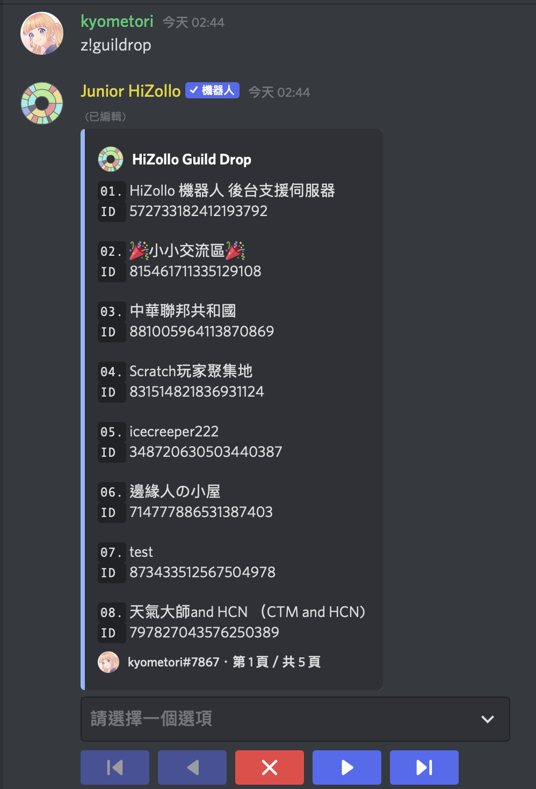
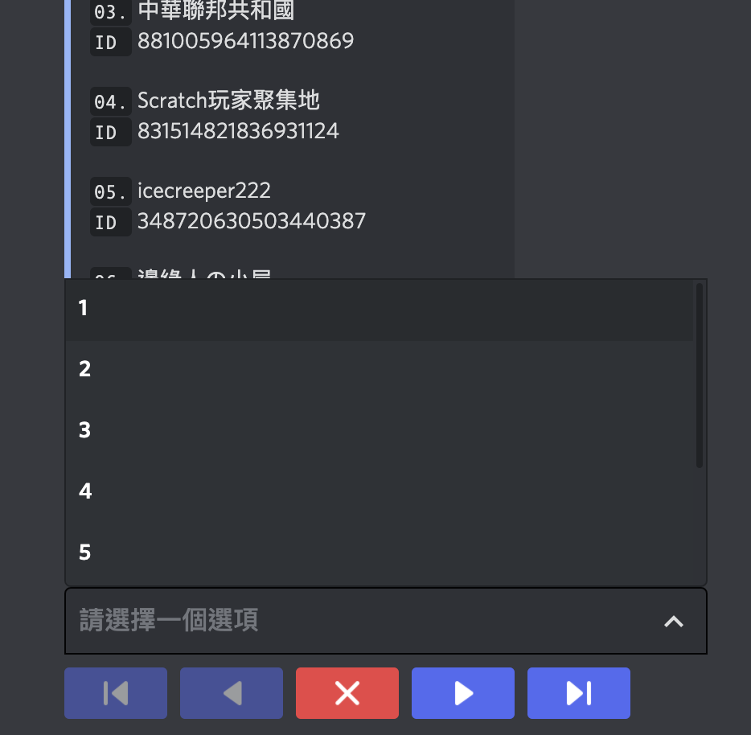
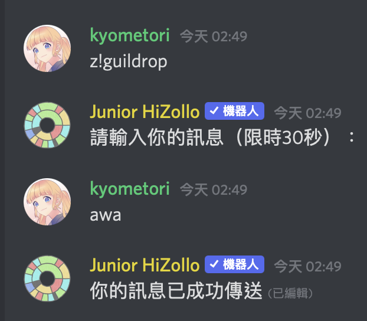
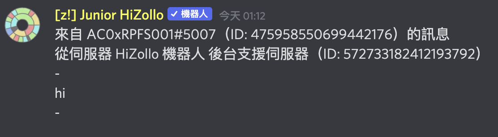

z!gulidrop 時，他將會顯示像以下的清單：

這會是一個有著幾頁的清單，你可以透過下方的按鈕來進行翻頁。除最末頁以外，每頁都會顯示 8 個伺服器，其中除了最上方固定是 HiZollo 後台支援伺服器以外，剩下 7 個則是其他也有在聯絡網的伺服器。清單上會列著他們的名稱以及 ID。這些東西會在發送訊息時用到。
z!guildrop 指令，只是這時我們要附上目標的伺服器名稱或著伺服器 ID 作為指令的參數。如下圖：

接著，HiZollo 會給你 30 秒的時間，讓你輸入想要傳送的訊息。在時間到之前，你傳的第一則訊息會被傳送到你指定的目標伺服器。在傳送之後，HiZollo 會告訴你訊息已經發送完畢。

接著，在對方的伺服器，就會有你剛剛傳送的訊息了。

| 分類 | 內容 |
|---|---|
| 基本 | 邀請 HiZollo ・ 指令清單及一般指令・ 指令用法的查詢 |
| 進階 | 指令群・ 指令別名・ 群組指令捷徑 |
| 特殊 |
隱藏指令・
z!calc 的進階用法・
支援伺服器
|
| HiZollo 聯絡網 | HiZollo Guild Drop |